Taizong · Plan for an Emperor, 648
“The people are the origin of the state. The state is the foundation of the sovereign.”
SJT 85–86 · Tang Models packet. Reader
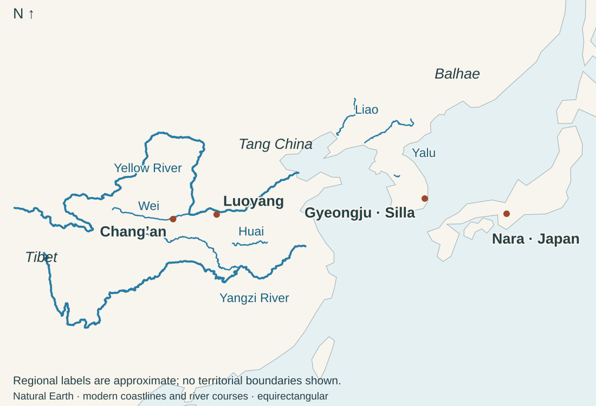
589: Sui reunifies north and south China. 618: Tang succeeds Sui. Reunification brings inherited institutions together: canals, land allocation, household registers, law and official recruitment.
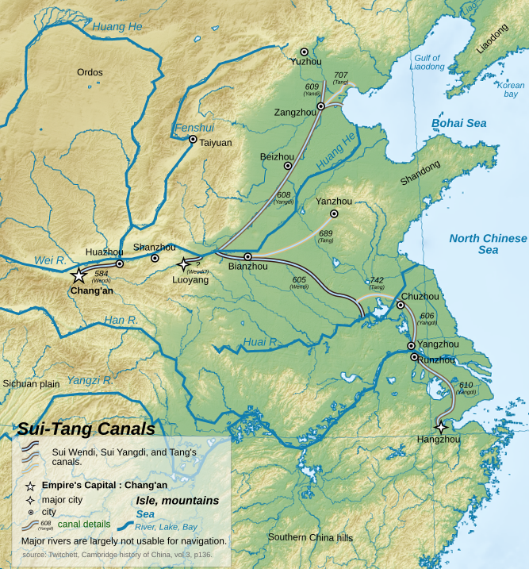
Grain, people and orders must move. The canal connected northern political centers with southern resources; its construction also required conscripted labor.
Sui’s campaigns against Goguryeo failed. Tang’s later alliance with Silla defeated Baekje and Goguryeo, but did not make Silla a lasting Tang possession.
“The people are the origin of the state. The state is the foundation of the sovereign.”
SJT 85–86 · Tang Models packet. Reader
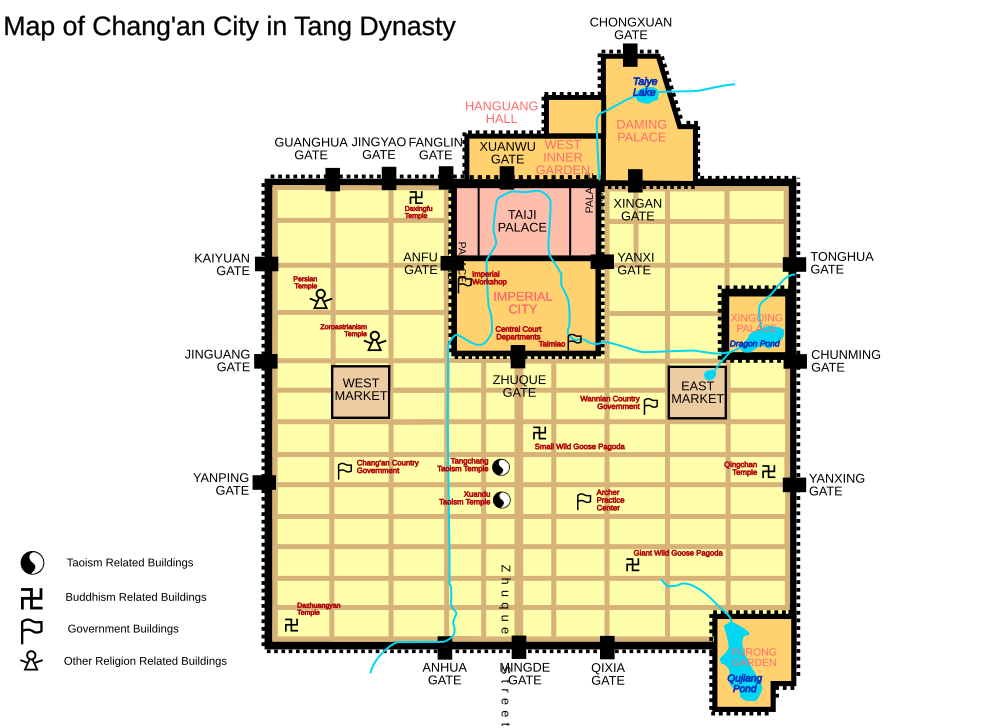
The court stood within an organized city of wards, markets, religious establishments and visiting communities. Examinations expanded recruitment, but powerful families retained advantages.
“The far-extended empire cannot be controlled by the will of one man alone: thus the emperor must control it together with others.”
SJT 86 · Tang Models packet. Reader
Remonstrance means advising a ruler against an error. Taizong’s next passage says correct advice should be accepted even from people of low status. The passage states an ideal of government; it does not prove that officials always followed it.
Course presentation: Chinese influence on Japan and Korea. Its capital comparisons appear below with Silla and Japan.
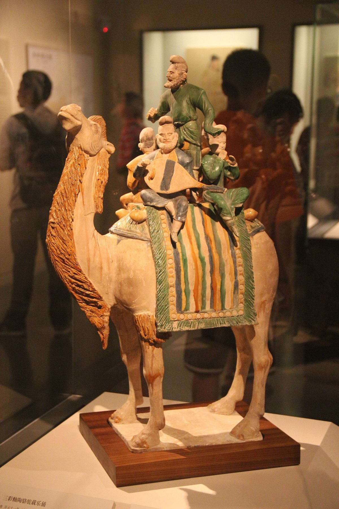
Envoys, merchants, monks and musicians linked Tang cities with Central Asia, Korea, Japan and other regions. New instruments, fashions and entertainments became part of elite life.
The tomb figure records how those connections were represented. It cannot identify the ethnicity of every depicted performer by itself.
Wu became emperor of her Zhou dynasty in 690. Buddhist patronage and interpretations of Buddhist prophecy supported her claims alongside court ritual and official recruitment.

Buddhist monasteries also taught, lodged travelers, received donations and held property. Religious authority had institutional and economic consequences.
755–763: the An Lushan rebellion. Powerful frontier armies turned against the court. Tang survived through outside military help and concessions to regional commanders; central control weakened.
“Then thoughts silently turn to those who have lost all livelihood And to the troops in far garrisons.”
Ebrey 87 · trans. Stephen Owen. Reader
Du Fu connects personal suffering to the conditions of other households and soldiers. Poetry is evidence of an educated writer’s moral and social commitments, not simply an ornament of court life.
Political weakening did not end cultural production. Late Tang trade and literature continued to develop. Dunhuang’s surviving documents also preserve ordinary transactions, registers and religious activity.
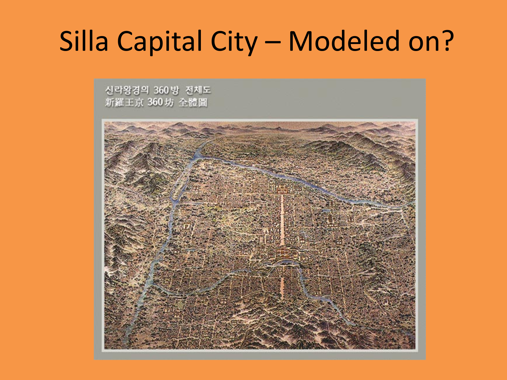
660: Baekje falls to the Silla–Tang alliance. 668: Goguryeo falls. 676: Silla has pushed Tang forces out of its southern sphere. 698: Balhae emerges to the north, with Goguryeo and diverse regional inheritances.
Silla adopted administrative forms, Chinese learning and aspects of capital planning while retaining hereditary bone rank, a system that limited access to high office. Cultural participation and political subordination were different things.
“To be poor and humble is not a thing to be ashamed of. What is shameful is to fail to put into practice what one has learned.”
SKT 68 · Tang Models packet. Reader
Kangsu’s command of written Chinese made him valuable in diplomacy. In the packet’s Muyŏl episode, Silla answers a Tang demand in deferential language while retaining its royal title. These are particular uses of shared learning.
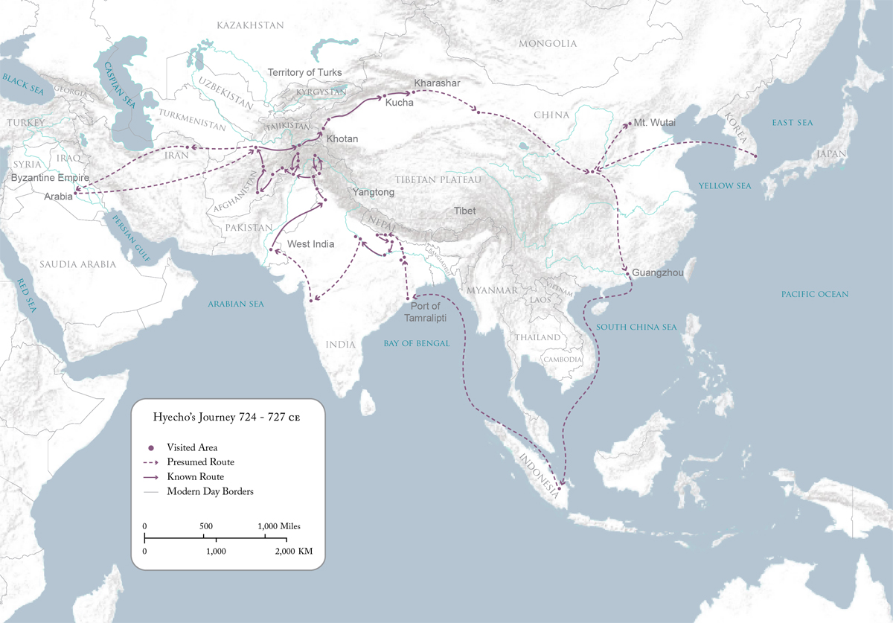
“Staring at the road home on this moonlit night
Only the drifting clouds are floating back.
I want to send a letter along with them,
But the winds blow harshly and pay me no mind.
My country is at the far northern end of the sky
The lands of the others lie in the far western reaches.
Geese don’t come to these warm southern climes,
Who will fly to the forest, to deliver my news?”
Translated by Matty Wegehaupt, Memoirs of a Pilgrimage to the Five Indian Kingdoms, in Collected Works of Korean Buddhism, vol. 10 (2012), pp. 100–101.
“The forest” may allude to Gyerim (“Rooster Forest”), at Silla’s capital, Gyeongju. The translation’s note identifies this as a possible allusion. The geese do not come to these southern lands, leaving Hyecho without a messenger to carry news home.
“You lament how far it is to the frontier in the west
My sadness is for the long road east.
The road is rough, snow on the ridges so deep,
the valleys rugged, where bandits swarm and creep.
The cliffs so stark, they startle even the birds as they fly,
people crossing the dizzy bridges, almost too difficult to try.
Though I have never cried once in all my years,
today I shed a stream of a thousand tears.”
Translated by Matty Wegehaupt, Memoirs of a Pilgrimage to the Five Indian Kingdoms, in Collected Works of Korean Buddhism, vol. 10 (2012), p. 158.
Hyecho meets a Chinese envoy traveling west as he makes his own way east. The poem records the dangers and loneliness of the journey.
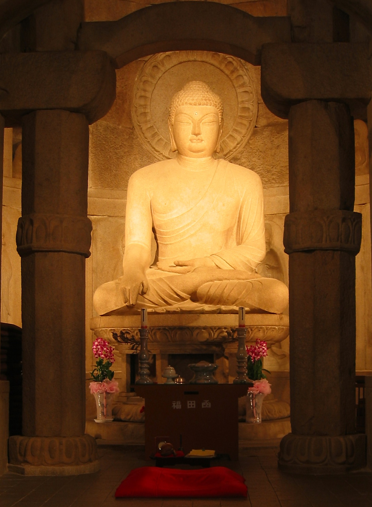
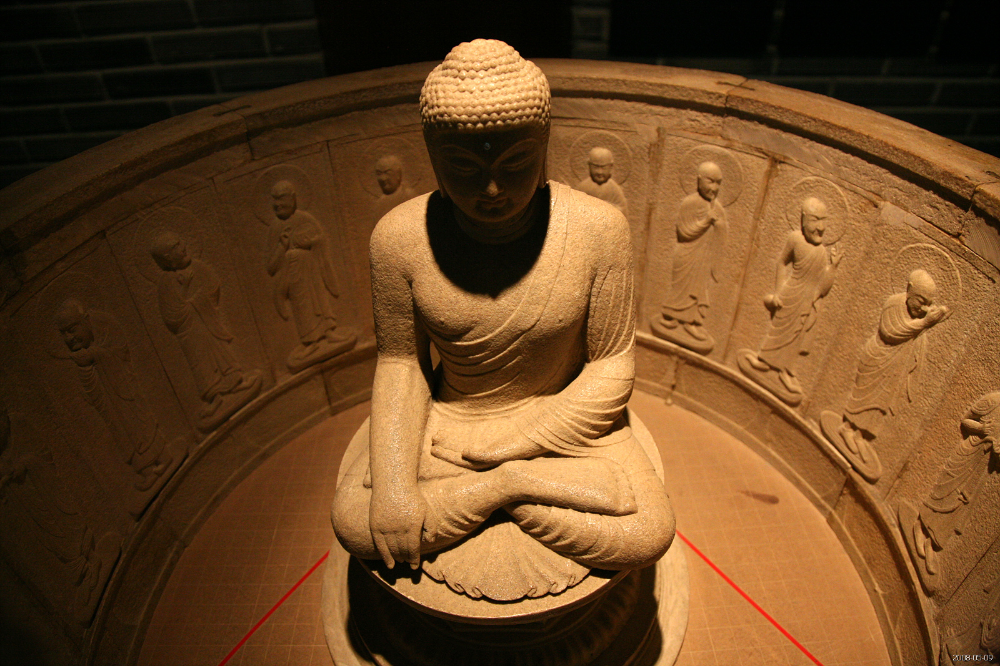
Seokguram: a central Buddha surrounded by other sacred figures. The architecture gives worshippers a spatial relationship to the image. UNESCO site record.
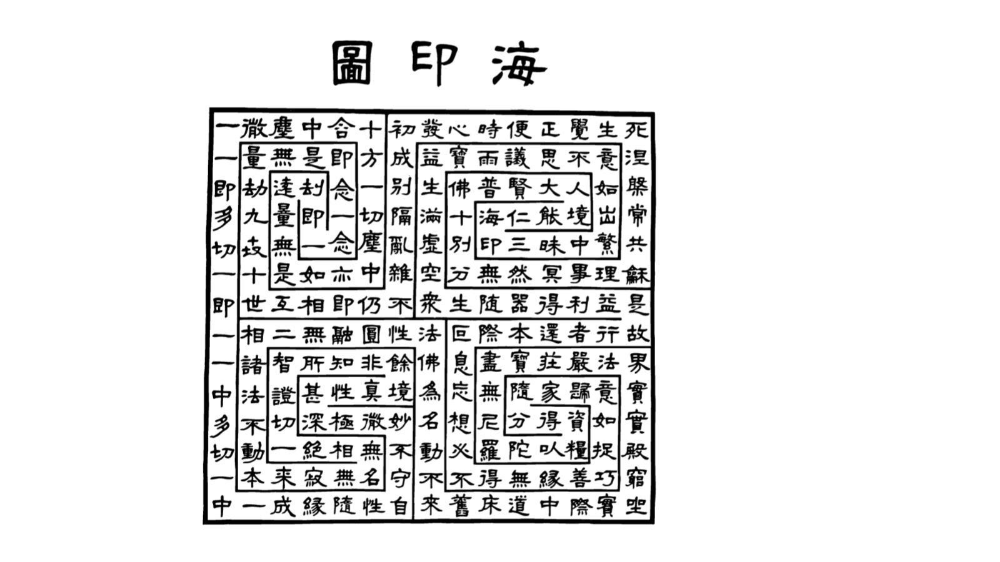
“In One is All,
In Many is One.”
Ocean Seal, verse 7 · translation in the course slides.
The diagram makes the relationship between one and many visible: distinct characters form a connected whole.
“we are two leaves, torn by early autumn winds from a single tree, scattered who knows where.”
Trans. Kevin O’Rourke, The Book of Korean Poetry (2006), 17. Reader
The song moves from separation toward the hope of reunion in the Western Paradise. Hyangga are vernacular Korean songs transmitted using adapted Chinese characters. Shared Buddhist teachings could express a particular relationship and loss.
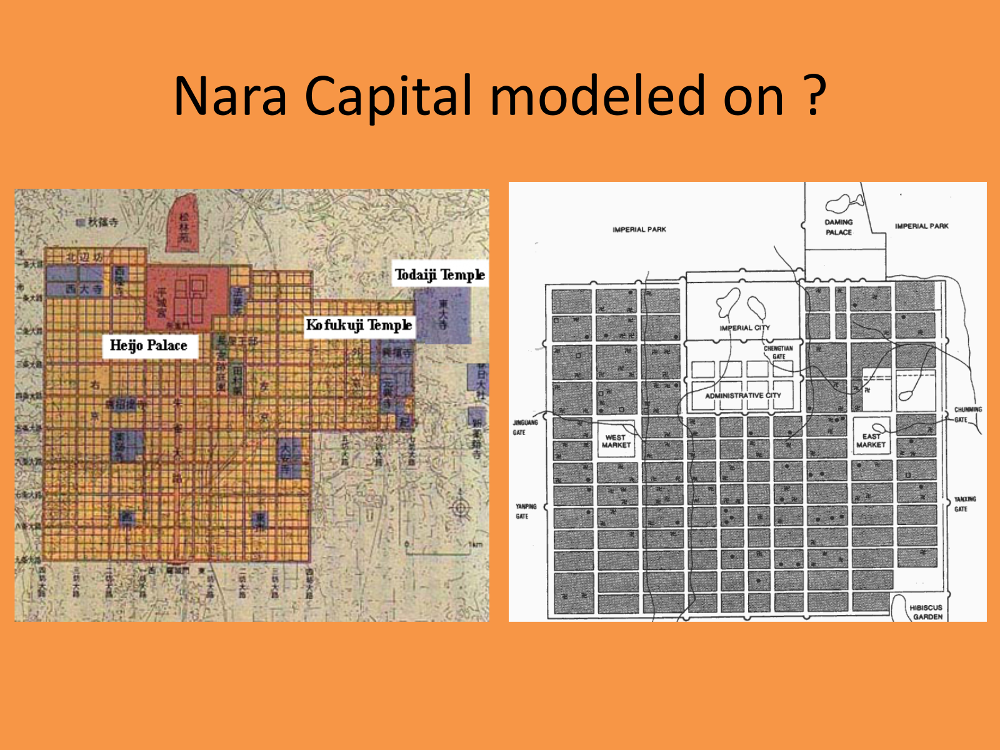
604: the date traditionally assigned to Shōtoku’s Seventeen-Article Constitution, before Tang began. Its Buddhist and Confucian language belongs to earlier continental connections. 645–646: Taika reforms. 710: the court moves to Nara.
“The lord is Heaven, the vassal is Earth.”
SJT 51. Reader
“Take account also of the acreage of cultivated land.”
SJT 77 · Tang Models packet. Reader
The reforms claim authority over people, land and taxation that powerful lineages had controlled. A proclamation records what the court wanted; local power and implementation must be assessed separately.
The Nihongi was compiled in 720. Its account of the earlier ruler Nintoku uses Chinese literary models of benevolent kingship. The packet’s editors explicitly identify that construction (SJT 74–75).
Watch: Todai-ji in Nara · 2:51 · o matty. Video from the course notes.
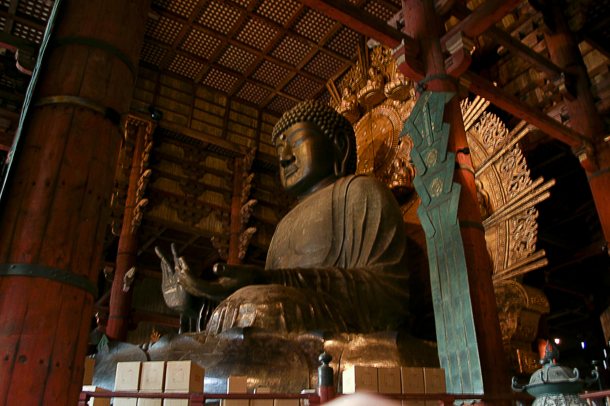
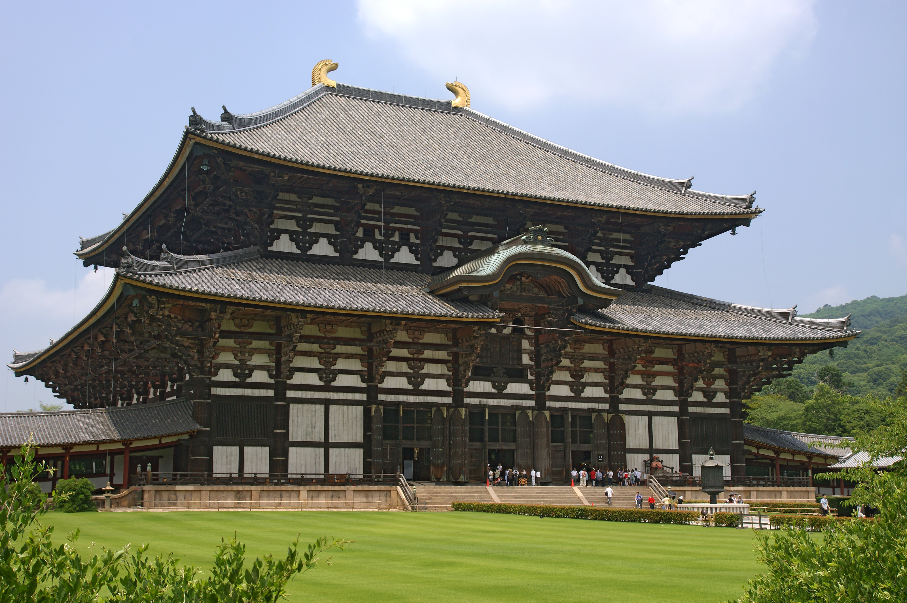
“The provincial and county authorities are not to disturb and harass the people by making arbitrary demands on them in the name of this project.”
SJT 115 · instruction to provincial and district officials. Reader
The proclamation mobilizes resources for a monumental Buddhist image while forbidding officials to harass the people. Small contributions are welcomed. The distinction between this declared ideal and the labor required matters.
What survives: the Buddha is a composite of original and later work; the hall shown is the 1709 rebuilding. Tōdai-ji remains an active temple. Temple history · Temple FAQ on the statue’s head.
| Setting | Shared resources | Specific political conditions |
|---|---|---|
| Tang | Law, examinations, capital culture, Buddhist institutions | Elite families, frontier armies and changing central power |
| Silla and Balhae | Written Chinese, diplomacy, administration, Buddhist learning | Separate states; Silla’s hereditary rank; alliances and conflict |
| Japan | Continental learning, registers, city plans, Buddhist sponsorship | Court and lineage power; local authority; distinct imperial claims |
The readings connect authority to material administration, learned advice, religious support and obligations to people. Use these specific cases alongside the earlier thinkers when preparing the Great Debate.
Great Debate guide · Six Scholar Exams and dossier due October 19; debate October 20.